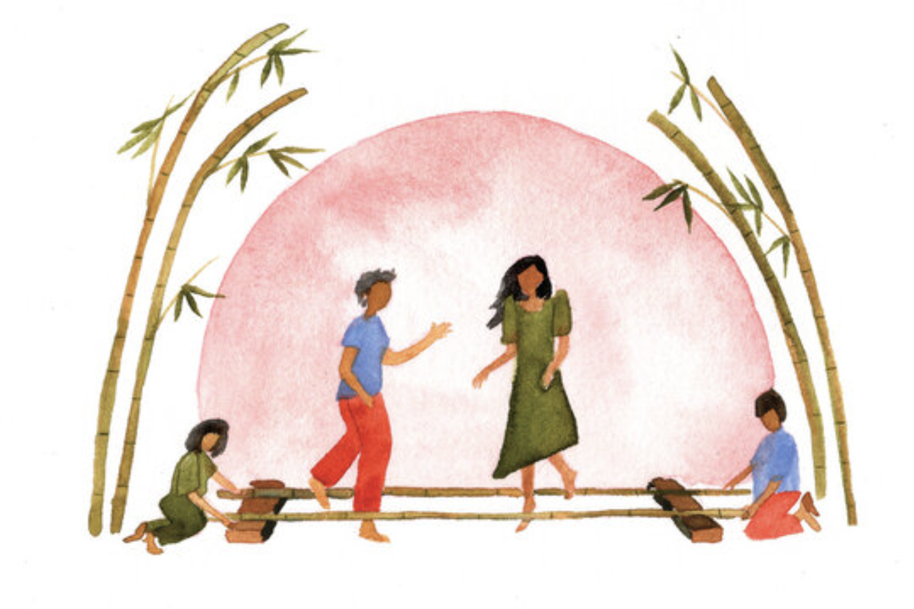
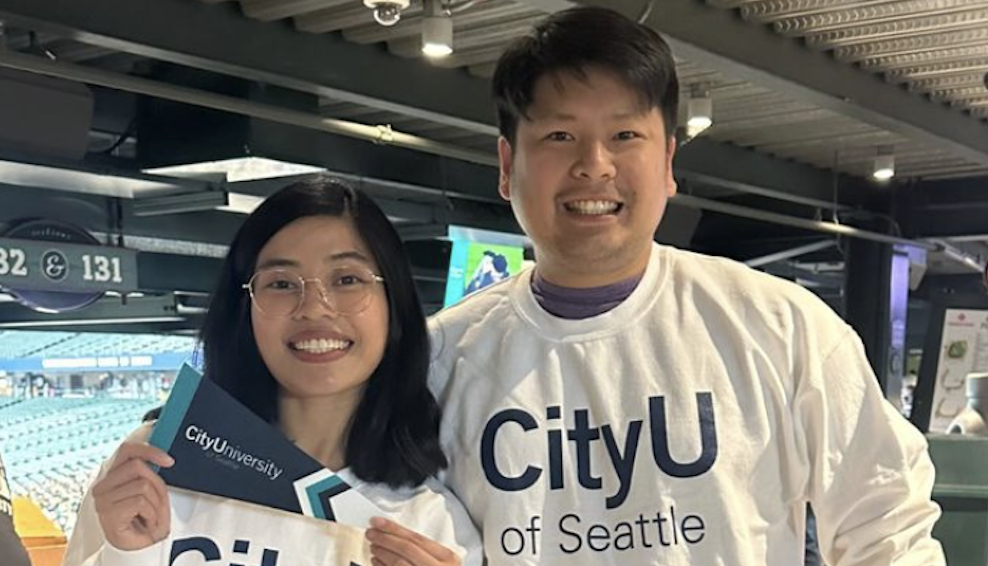
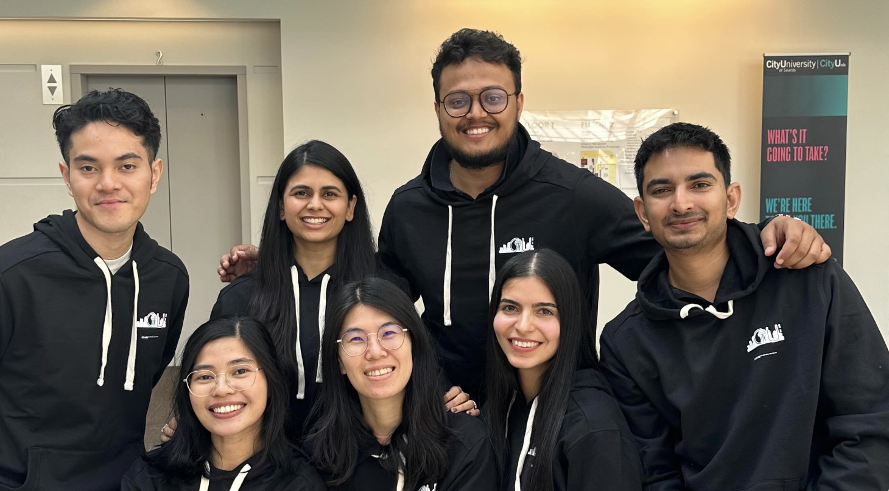
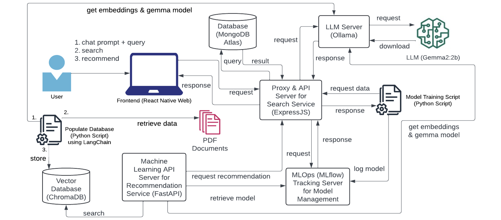

Tuklas
Where Curiosity Leads to Connection.
About Tuklas
Tuklas - Why the Name and Logo
"Tuklas" means "discover" in Filipino, capturing the essence of a quest for new knowledge or skills. The logo draws inspiration from the Philippines' rich history and cultural heritage.

Our journey towards discovery resonates with the story of Magellan's expedition reaching the Philippines, symbolizing exploration and uncovering new frontiers.
Additionally, our logo takes inspiration from "Tinikling" — a traditional Filipino dance that requires coordination, adaptability, and rhythm.
The Problem and Our Goals
There’s a gap between talented CityU graduate students with specialized skills and the communities that could benefit from their knowledge. Our goal is to bridge this gap by connecting CityU students and faculty with individuals seeking knowledge.
Our Solution
We envision a platform that enables users to book one-on-one sessions or group workshops led by CityU students and faculty. To enhance the user experience, we incorporate an AI-powered Personalized Recommendation feature.
Technical Implementation
Our platform’s technical foundation includes modern web and mobile technologies, with a backend that supports scalable, AI-driven recommendations.
Explore Topics
AI & Machine Learning
Dive into the world of artificial intelligence and machine learning. Learn about how AI models are built, trained, and deployed, including advanced techniques for creating intelligent systems.
Mentors: Clark Ngo
Full-Stack Development
Explore full-stack development, covering both frontend and backend technologies. Understand how to build complete web and mobile applications from the ground up.
Mentors: Clark Ngo
Data Engineering
Learn the essentials of data engineering, including data pipeline design, data transformation, and storage solutions. This topic focuses on managing and structuring data effectively.
Mentors: Clark Ngo
Event Management
Get insights into event planning, from coordinating logistics to managing budgets and collaborating with vendors. Ideal for those interested in organizing successful events and brand activations.
Mentors: Christine Emano
Project Coordination
Understand the fundamentals of project coordination, including setting timelines, managing resources, and working with cross-functional teams to achieve project goals.
Mentors: Christine Emano, Clark Ngo
Creative Direction
Explore the art of creative direction, where you’ll learn to craft visual stories and brand identities. This includes skills in concept development, storytelling, and guiding creative projects from inception to completion.
Mentors: Christine Emano
Social Media Management
Discover strategies for managing and growing social media accounts. Learn about content creation, audience engagement, and analytics to build a compelling social media presence.
Mentors: Christine Emano
Production Management
Gain knowledge in overseeing production processes, whether for events, video, or print. This involves budgeting, scheduling, and ensuring that all deliverables meet quality standards.
Mentors: Christine Emano
DevOps
An introduction to DevOps practices, including managing deployment pipelines, automating workflows, and monitoring applications. This topic is essential for modern software development.
Mentors: Clark Ngo
Copywriting
Learn the principles of effective copywriting, including how to create engaging, persuasive text for marketing, events, and branding. Ideal for aspiring writers and marketers.
Mentors: Christine Emano
Mentors
Clark Ngo
AI Engineer and Software Developer with a strong background in building RAG systems, IT consulting, and full-stack development.
Christine Emano
Founder, event manager, and creative director with expertise in event production, project management, and social media marketing.